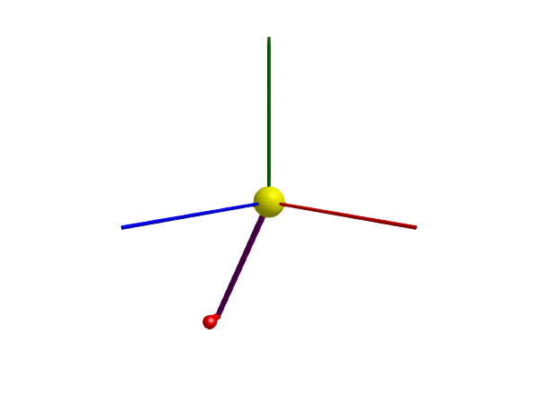

Spherical pendulum

This example models a spherical pendulum. The pivot point is modeled using a Spherical joint, this lets the pendulum rotate in three directions. The pendulum rod is modeled using a FixedTranslation, a component without inertial properties, and the mass of the tip is modeled using a Body. To model a rod with inertial properties, see, e.g., BodyShape or BodyCylinder, In this example, we choose the joint to be the root (joints are often better root objects than bodies).
using Multibody
using ModelingToolkit
using Plots
using JuliaSimCompiler
using OrdinaryDiffEq
t = Multibody.t
D = Differential(t)
world = Multibody.world
systems = @named begin
joint = Spherical(state=true, isroot=true, phi = 1, phid = 3, radius=0.1, color=[1,1,0,1])
bar = FixedTranslation(r = [0, -1, 0])
body = Body(; m = 1, isroot = false, r_cm=[0.1, 0, 0])
end
connections = [connect(world.frame_b, joint.frame_a)
connect(joint.frame_b, bar.frame_a)
connect(bar.frame_b, body.frame_a)]
@named model = ODESystem(connections, t, systems = [world; systems])
model = complete(model)
ssys = structural_simplify(IRSystem(model))
prob = ODEProblem(ssys, [], (0, 5))
sol = solve(prob, Rodas4())
@assert SciMLBase.successful_retcode(sol)
plot(sol, idxs = [body.r_0...])
3D animation
Multibody.jl supports automatic 3D rendering of mechanisms, we use this feature to illustrate the result of the simulation below:
import GLMakie
Multibody.render(model, sol; filename = "spherical.gif") # Use "spherical.mp4" for a video file